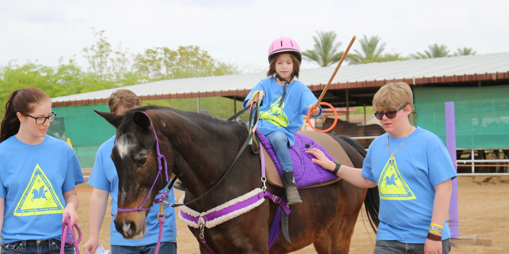

"For millennia, people the world over have had a working and love relationship with horses; and though horses are no longer needed in the service of man, the love for these beautiful creatures remains. The recreation and sports associated with horseback riding are not only enjoyable, but have been proven to be therapeutic. Individuals with disabilities are challenged by the activity, and are not only rewarded by it, but realize it as a road to recovery. For them it's a chance for building self-confidence, promoting independence, and providing a sense of normalcy not otherwise available.Whether it's a 7-year-old with Cerebral Palsy, or a 75-year-old victim of stroke, their many stories and successes will touch you. This program improves lives. This program works! " If you would like to read more, visit their page at: Stable Influence About
"Amazing charity, beautiful in every way. Will be always grateful for their impact on challenged lives. " -Dick
"Will continue to share this with everybody who could benefit!" -Margaret
"The Stable is a beautiful and unique organization that takes therapy to a different level." -Jenny